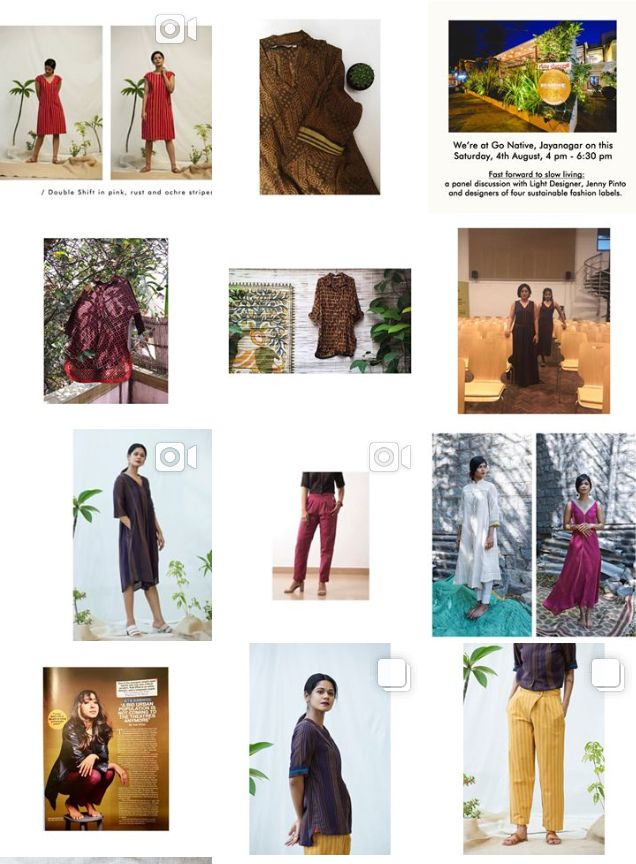
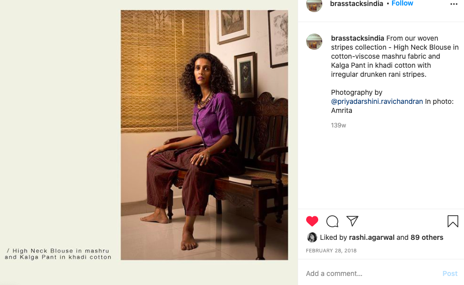
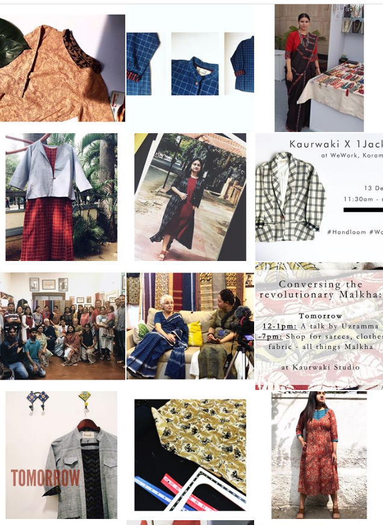
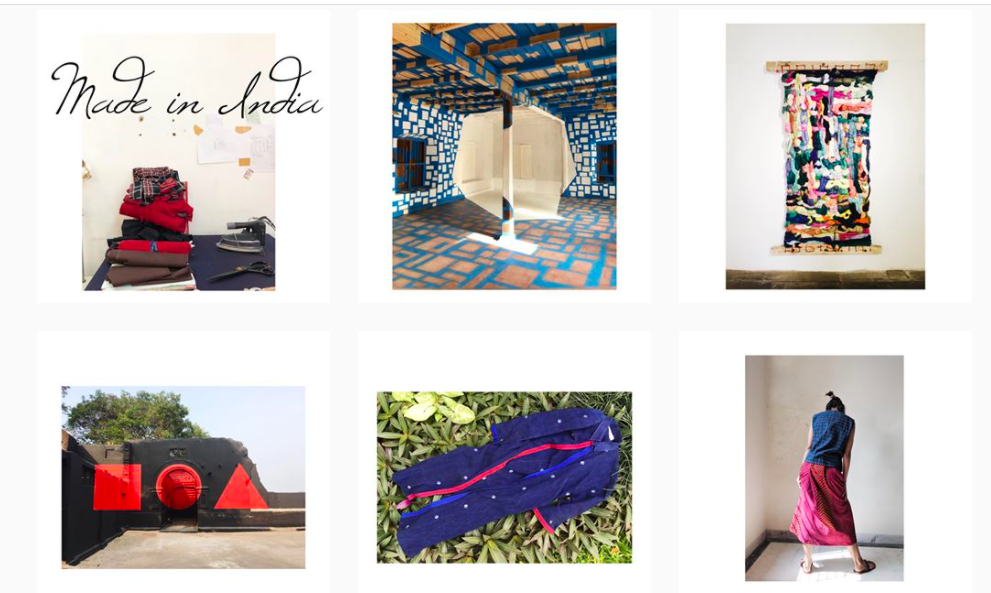

Writing
Lessons from a German recruiter | Quarterback Consulting
What we learnt from the ‘Science of Well Being by Yale University’ that could apply to startups | Quarterback Consulting
Organic Wine - What is so special about it ? | Bon Vivant Magazine
Easter Day traditions and food around the world | Bon Vivant Magazine
Social Media




Newsletters
Newsletters for fashion brands: